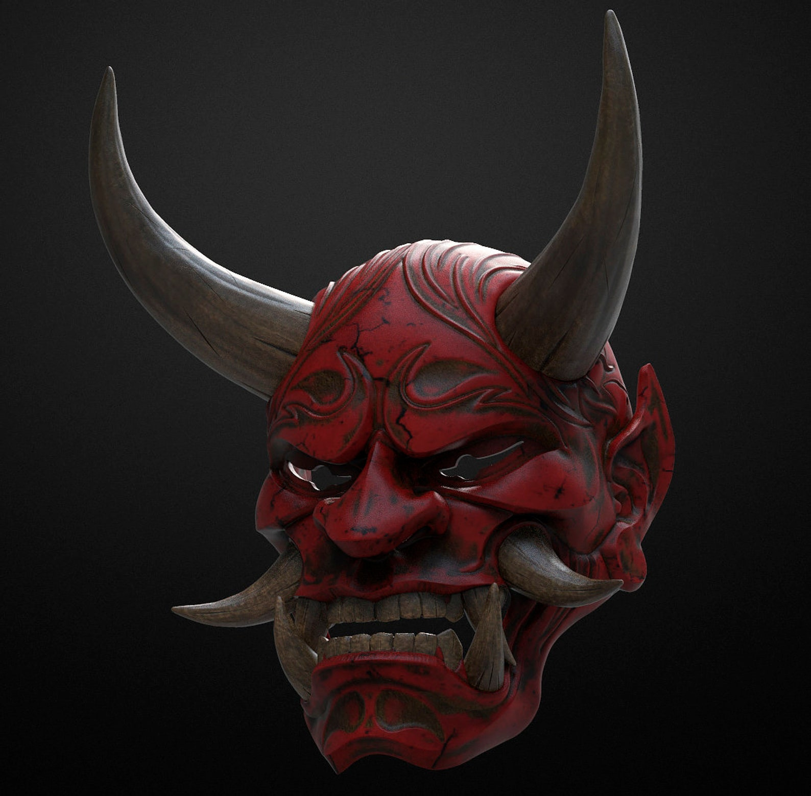

We Are
JMC
Las máscaras japonesas, conocidas como "men", han sido una parte integral de la cultura japonesa durante siglos.
Estas máscaras están hechas tradicionalmente de madera, metal o cerámica y se utilizan en diversas ceremonias y
representaciones teatrales como el Noh, el Kabuki y el Kyogen. Cada máscara tiene su propio significado y simbolismo,
representando diferentes personajes, emociones o conceptos.
